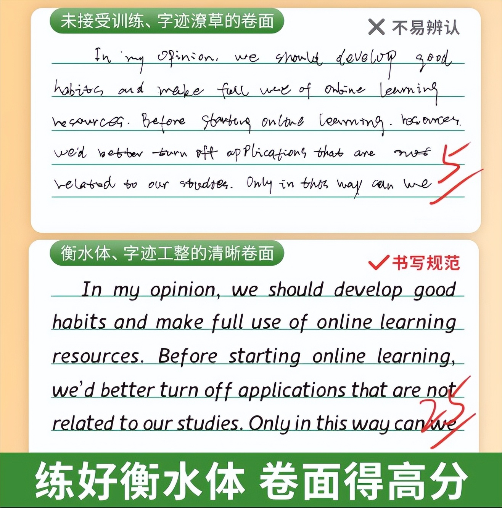
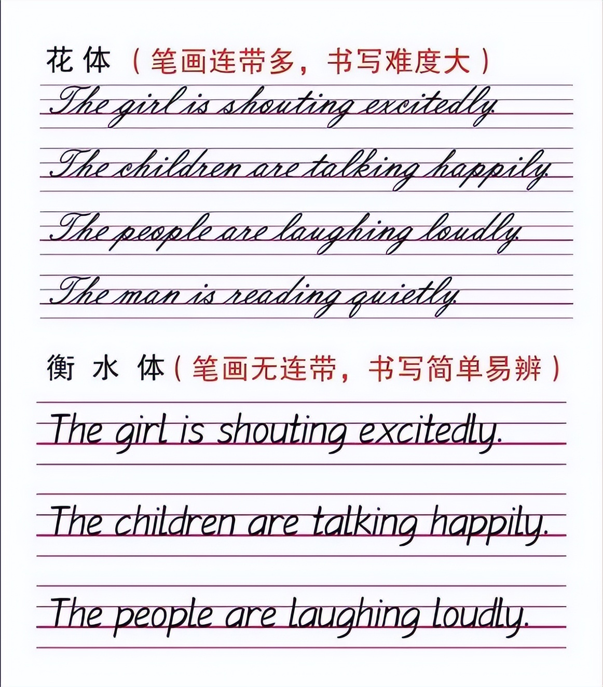
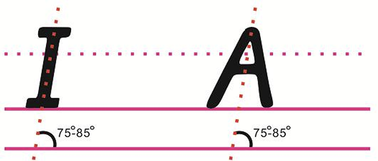
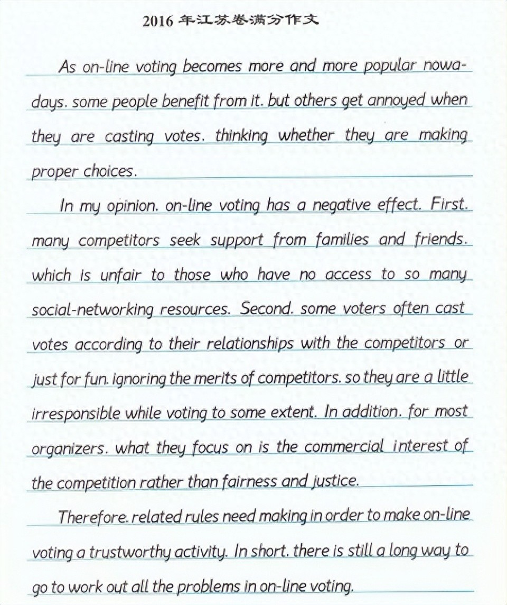

提示：网上关于衡水体的学习教程很多，但是并没有在线练习衡水体的网站，本站专门提供衡水体在线练习的功能，还可以下载PDF文件，方便大家打印并临摹衡水体，感谢大家的关注：衡水体生成器 · 英文转衡水体，另外本站上线了AI作文改写功能，服务于广大考研学生和四六级学生，欢迎大家的关注。
衡水体，简单说就是一种专门为考试设计的英文手写印刷体。它因河北衡水中学最先大规模推广而得名，核心目的就是让卷面整洁、清晰，从而在考试中拿到或保住卷面分。
衡水体的主要特点非常鲜明：
（1）极度工整，独立字母
所有字母大小写都是独立书写，没有连笔。每个字母的形状、大小、倾斜度都高度统一。

（2）圆润饱满，无勾无刺
字母转折处多用圆润的弧线，像字母 g、y、f 的尾部都不会写出花体的勾，而是短而利落。这使得整篇文字远看几乎没有视觉干扰。

（3）统一倾斜，间距严格
通常字母会保持大约5°的轻微向右倾斜。字母间距、单词间距和行距都有严格规范，给人感觉像印刷出来的一样整齐。

衡水体的优点和争议都非常突出：
优点：在考试扫描阅卷中优势巨大，视觉效果干净清爽，深得阅卷老师青睐，几乎是公认的“高分卷面字体”。

争议：因抹杀个性、像流水线产品而常被批评。同时，这种一笔一画的写法书写速度慢，不适合日常记笔记，在需要快速书写的大题中会耽误时间。
简单说，它是一种应试技巧下的产物，适合主观题多、对卷面分敏感的英语作文场景，但别把它当成需要日常使用的书写方式。
笔：用0.5mm或0.7mm的中性笔。0.7mm的更容易写出饱满的笔画粗细。
纸：开始时用四线三格纸练习，能帮你准确定位每个字母的“身高”和“身体比例”。
记住，衡水体的灵魂就是 “圆润、饱满、无勾、对齐”。下面的书写要点可以通过【衡水体英文生成器】来练习一下，找找感觉。
（1）坐姿与握笔
这是最容易被忽略的。坐正，纸放平或稍向左倾斜。握笔位置离笔尖约2-3厘米，保证视线通透，下笔力量均匀。
（2）笔画规则：杜绝连笔和多余笔锋
无勾：这是最关键的一点。所有带“小尾巴”的字母，比如 g, j, y，尾部都必须写成短而直的竖或弯，绝对不能向上翘起勾回。同样，字母 a, d, h, i, k, l, m, n, t, u 等的收笔，都直接干净地停住，不带任何弯勾。
无刺：书写时起笔和收笔不要有装饰性的小点或尖刺。
（3）字母形态：圆润且饱满
曲线字母：像 a, c, e, o, s 等，要写得格外饱满，想象它们的圆形或椭圆形部分要能装下一个完整的乒乓球。
直线字母：写 i, l, t, f 时，竖线要直，横线要平，干净利落。
（4）统一倾斜角度（关键）
所有字母要保持一致且轻微的倾斜，大约5°-15°。
练习技巧：可以在纸上画一些平行的斜线作为辅助线，确保每个字母的竖笔都与斜线平行。用四线三格纸时，让字母斜线与竖线虚线平行。
（5）严格的空间站位
中间格饱满：所有的小写字母，如 a, c, e, m, n, o, r, s, u, v, w, x, z，要写满整个中间格，上下都要顶格，但不要超出。
上格和下格占一半：b, d, h, k, l 等的竖笔要向上顶到第一线，占满中间格和上格；g, p, q, y 等要向下抵住第四线，占满中间格和下格。
占三格的字母：f 通常写满三格，注意其上下两个弯要对称；j 的写法通常是竖弯后直向下，占满中下两格即可。
（6）精准的间距控制（易错点）
字母间距：字母与字母之间要保持大约1毫米的等距。一个检查方法是，想象在任意两个字母之间都能刚好放进一个小写 i 的笔画，不挨着也不多余。
单词间距：一个单词写完后，与下一个单词之间空出刚好一个小写字母 a 的宽度。
慢速贴线写：初期不求快，把每个字母都饱满地“贴”在线上。一笔一画，感受笔画的形态。
从字母到整体：先练基础字母，再练常见字母组合和单词，最后练习抄写句子和范文。重点练习 a, g, y, e, s, r 这些易变形或不饱满的字母。
临摹优于描红：对照字帖在空白四线格上临摹，比直接在字帖上描红进步更快，更能锻炼观察力。
平时慢练，考前提速：练习时慢求质量，考前1-2个月则要计时写作，确保在高速下字体不变形。
最后提醒一下，衡水体的本质是清晰、整洁，而非机械的统一。在保证卷面舒适的前提下，写出自己的节奏即可。